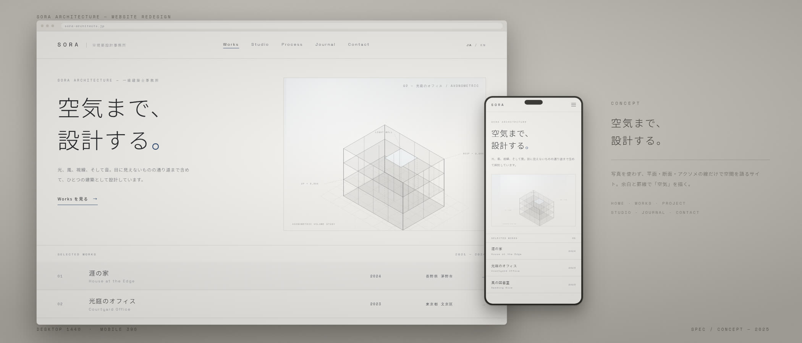
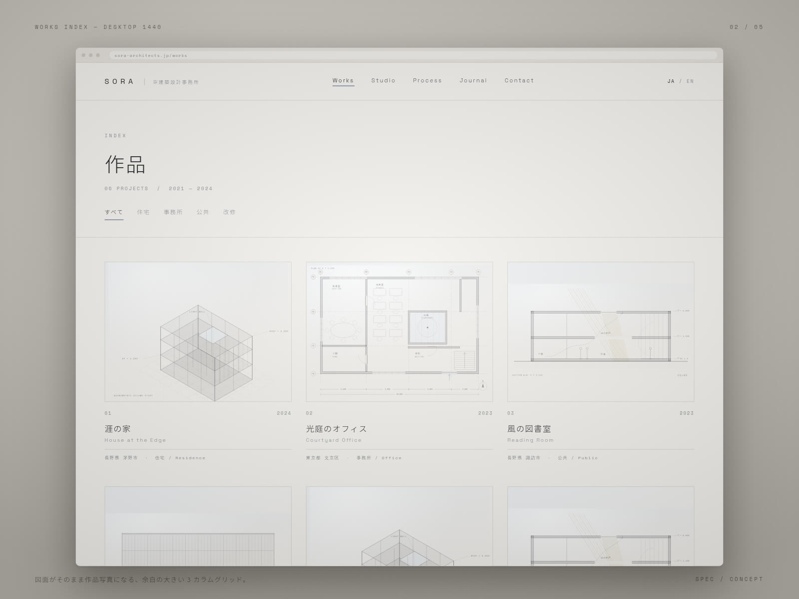
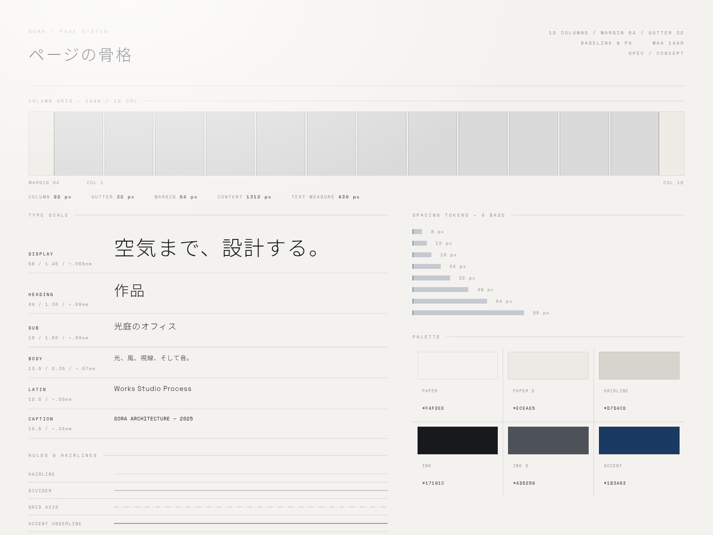
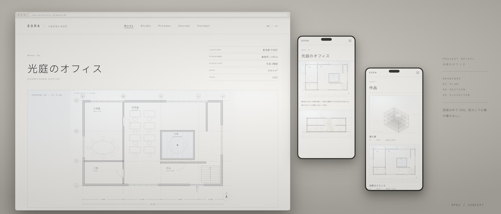

建築設計事務所のWebサイトリデザイン。「空気まで、設計する。」という一文を、写真ではなく図面と余白だけで成立させた、白く静かなエディトリアルサイト。
架空のプロジェクトです。実在のクライアント・実績ではありません。

建築写真を一枚も使わないWebサイトとして設計した。載せるのは平面図・断面図・立面図・アクソメトリックの四種類の線画だけ。竣工写真に頼らず、設計そのものの言語で空間を見せる構成にしている。
掲げた一文は「空気まで、設計する。」。目に見えないものを設計する事務所なのだから、画面の側も見えないもの——余白、罫線、行間——で語るべきだと考えた。紙のような暖色の白地に、紺一色だけをアクセントとして置いている。


図面はすべてSVGで描き起こした。壁の塗り、建具の開き勝手、通り芯と寸法線、断面のハッチングとレベル記号、そして光と空気の流れを示す破線まで、実際の設計図の作法に沿って引いている。ラスター画像ではないので、どの画面でも線が痩せない。
骨格は12カラム／外余白64／溝32、最大幅1440。和文は Noto Sans JP 300、欧文は Space Grotesk 300/400、キャプションは Space Mono。アクセントは紺 #1B3A63 の一色だけに絞り、下線・通り芯・ガラス面の表現だけに使っている。
作った画面はホーム／作品一覧／作品詳細の3ページ。それぞれデスクトップ1440とモバイル390の二幅で組み、同じグリッドとタイプスケールの上に乗せた。

本ページは構想（Spec）です。実在するクライアントの業務ではなく、掲載している画像はすべてこの案のために制作したデザインボードです。図面に記した所在地・面積・竣工年も、すべて架空の設定です。
効果・売上・受賞・メディア掲載といった実績の数値は一切掲載していません。示しているのはデザインの意図と、実際に作ったアウトプットの範囲だけです。